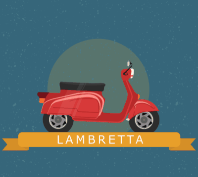

Introduction to Animation Techniques

Qt Design Studio supports the following types of animation techniques that are suitable for different purposes:
- Common motion design techniques for 2D and 3D
- Screen-to-screen or state-to-state animations
- Data-driven UI logic animations
Common Motion Design Techniques
The following table summarizes common motion design techniques for 2D and 3D and their typical use cases.
| Technique | Use Case |
|---|---|
| Timeline animation | Linear interpolation through intermediate values at specified keyframes instead of immediately changing to the target value. |
| Easing curves attached to keyframes | Nonlinear interpolation between keyframes to make components appear to pick up speed, slow down, or bounce back at the end of the animation. |
| Animation curves attached to keyframes | Complex 3D animations that require several keyframes so it becomes necessary to visualize the value and the interpolation of a keyframe simultaneously. |
Timeline and Keyframe Based Animation
Timeline animation is based on keyframes. In Qt Design Studio, keyframes determine the value of the property of a component at a certain time. Animating properties enables their values to move through intermediate values instead of immediately changing to the target value.
For example, you can set the y position property of a rectangle to 0 at the start of your animation and to 100 at the end of the animation. When the animation is run, the rectangle moves from position 0 to 100 on the y axis. In the middle of the animation, the y property has the value of 50 since keyframes are interpolated linearly by default.
Easing Curves
Sometimes you don't want linear movement but would rather like the rectangle to move faster at the beginning and slower at the end of the animation. To achieve this effect, you could insert a large number of keyframes between the start frame and the end frame. To avoid this effort, you can specify easing curves for nonlinear interpolation between keyframes. The easing curves can make components appear to pick up speed, slow down, or bounce back at the end of the animation.
Animation Curves
While easing curves work well for most simple UI animations, more complex 3D animations require several keyframes so it becomes necessary to visualize the value and the interpolation of a keyframe simultaneously. The Curves view visualizes the whole animation of a property at once and shows the effective values of a keyframe together with the interpolation between keyframes. It can also show animations of different properties simultaneously so that you can see the animation for the x position and the animation for the y position side-by-side.
Screen-to-Screen or State-to-State Animations
The following table summarizes techniques used for navigating between screens and UI states.
| Technique | Use Case |
|---|---|
| Application flows | An interactive prototype that can be clicked through to simulate the user experience of the application. |
| Transitions between states | Transitions between different states of the UI using a transition timeline that is based on keyframes. You can apply easing curves to the keyframes. |
Application Flows
You can design an application in the form of a schematic diagram that shows all the significant components of the application UI and their interconnections by means of symbols. This results in an interactive prototype that can be clicked through to simulate the user experience of the application. Code is created in the background and can be used as the base of the production version of the application.
For more information, see Designing Application Flows.
Transitions Between States
UIs are designed to present different UI configurations in different scenarios, or to modify their appearances in response to user interaction. Often, several changes are made concurrently so that the UI can be seen to be internally changing from one state to another.
This applies generally to UIs regardless of their complexity. A photo viewer may initially present images in a grid, and when an image is clicked, change to a detailed state where the individual image is expanded and the interface is changed to present new options for image editing. At the other end of the scale, when a button is pressed, it may change to a pressed state in which its color and position are modified so that it appears to be pressed down.
Any component can change between different states to apply sets of changes that modify the properties of relevant components. Each state can present a different configuration that can, for example:
- Show some UI components and hide others.
- Present different available actions to the user.
- Start, stop, or pause animations.
- Execute some script required in the new state.
- Change a property value for a particular component.
- Show a different view.
State changes introduce abrupt motion that you can make visually appealing by using transitions. Transitions are animation types that interpolate property changes caused by state changes.
In Transitions, you can set the start frame, end frame, and duration for the transition of each property. You can also set an easing curve for each animation and the maximum duration of the whole transition.
Data-Driven UI Logic Animations
The following table summarizes techniques used for animating the UI logic by using real or mock data from a backend.
| Technique | Use Case |
|---|---|
| Data-driven timeline animation | Using real or mock data from a backend to control motion. |
| Programmatic property animation | Interpolating property values programmatically to create smooth transitions. |
Data-Driven Timeline Animation
You can connect property values to data backends to drive timeline animation. You can fetch data from various sources, such as data models, JavaScript files, and backend services. You can also connect your UI to Simulink to load live data from a Simulink simulation.
You can connect these data sources to the current frame of a timeline, creating animation when the backend changes the current frame property.
For example, you could connect the speed value from a backend to a tachometer dial in a cluster. As the speed value is increased or decreased from the backend, it moves the needle animation from one end of the timeline to the other.
For more information, see Simulating Complex Experiences.
Programmatic Animation
You can control property animation programmatically. Property animations are created by binding Animation components to property values of component instances to gradually change the property values over time. The property animations apply smooth movement by interpolating values between property value changes. They provide timing controls and enable different interpolations through easing curves.
Developers can control the execution of property animations by using the start(), stop(), resume(), pause(), restart(), and complete() functions.
You can create instances of preset animation components available in Components > Default Components > Animation to create animations depending on the type of the property and the behavior that you want.
For more information about Animation components and their properties, see Animations.
| Component | Use Case |
|---|---|
| Property Animation | Applying animation when the value of a property changes. Color and number animations are property animation types for specific purposes. |
| Property Action | Setting non-animated property values during an animation. |
| Color Animation | Applying animation when a color value changes. |
| Number Animation | Applying animation when a numerical value changes. |
| Parallel Animation | Running animations in parallel. |
| Sequential Animation | Running animations sequentially. |
| Pause Animation | Creating a step in a sequential animation where nothing happens for a specified duration. |
| Script Action | Executing JavaScript during an animation. |